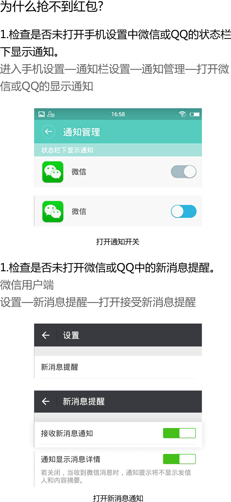

一、不提醒红包消息？
1. 请打开红包开关及相关权限：打开秒抢红包，辅助功能及通知栏权限。
2. 小米、魅族等机型，需确保 充电助手 的悬浮窗权限已开启
- 找到手机自带的“安全中心”（或叫“手机管家”等类似名字）中，找到并打开“权限管理”
4. 请确保微信、qq的消息提醒已打开

- 在新消息提醒中，确保“接收新消息通知”和“通知显示消息详情”已打开
二、自动打开页面，自动抢红包
1. 按照秒抢红包设置，打开辅助功能及通知栏权限。
2. 如果可以，建议取消锁屏密码，抢红包更快。
3. 如果还不行，重启手机试试